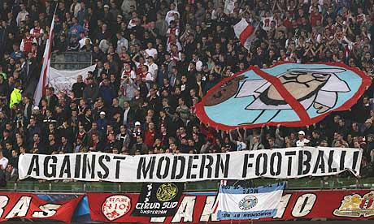

The Change to Modern Football
How football clubs are trying to turn the game into business, and how do the fans react to that.
ADMIN / ARTICLES / 04.10.2018 / Images: Ultra Style, Facebook, Instagram, Ferencvaros
Media, UEFA, FIFA and plastic fans
In the last 10 or 15 years we can see a change in football as it becomes more business oriented and less fan and ultra. The main reasons of this are FIFA and UEFA. With their mad restrictions against football fans and heavy bans and fines. Media who project the more passionate fans as criminals are also to blame.
Media wants to earn more money from advertisements and pay-per-view so they force big football clubs to minimize or even ban the most passionate fans. The purpose is that so the stadium is then filled only with tourists and modern plastic fans. We see this kind of practice with the biggest teams in the world – Real Madrid and Barcelona.
Transfer to modern clubs and ultra’s reactions.
Barcelona’s ultras Boxios Nois left the stands more than 15 years ago as they were repressed by the club. Similar thing happened with Ultras Sur (Real Madrid) as they left shortly after Boxios Nois. In the latest years Ultras Sur appear again on the stands, but they are following specific rules set by the club.
One interesting story is about PSG ultras – Collectif Ultras Paris. They have been banned from the stands 8 years ago because of the death of a fan. The reason that many consider to be the real reason is that PSG’s new Arabic owners wanted to make the club a winning business. That means converting the team to be similar to clubs in England – with no ultras, only with tourists and regular fans. As you may think, atmospheres in England are the worst in Europe, maybe except Liverpool and Man United fans. But compared to Germany the level is very low.
The return of ultras
So after PSG owners banned the ultras, the atmosphere in PSG’s home games became terrible. After 6 long years, in 2016 the ultras returned with a bang! And this year they made an amazing choreography and 2 huge pyroshows against Real Madrid in the Champions League Round of 16. Something unthinkable by other teams and fans in this stage of the competition.
Modern security and presenting ultras as terrorists
Other changes to modern football we can see in Hungary for example, where the change is lead by one club – Ferencvaros. The club owner wanted to restrict ultras by implementing a hand-scanner when you enter the stadium. Your hand-print is connected to your ID and your fan-card, so it’s basically like you don’t go to watch your childhood team play, it’s more like going to the airport and you look like a terrorist.
Football without fans is nothing
Of course Ferencvaros ultras didn’t like this idea and the boycotted team games for a couple of years. This year the club decided to make an agreement with the ultras and the hand-scanning was removed.

Ultras came back to the stadium and made some impressive show, like one in the derby against Ujpest last week.The actions from the club shows that football without fans is nothing, and after a couple of years with a low attendance and dead atmosphere, they decided to invite ultras back.
Another phenomenon we can see is the globalization of football.
Last month the Spanish FA decided that El Clasico this year will be played in America? That was the last drip in the glass for both fans and players of the two teams. Captains Sergio Ramos and Lionel Messi and other key players from both teams went to a meeting with the FA to discuss the problem. The problem is that the FA want’s to make a lot of money like the English FA is making for example.
Americans are tourist and would pay insane amounts of money just to watch a spectacle.
They are the real description of modern fans. With almost no ultra-culture they only want to attend the game, eat hamburgers and chips. That is what earns the teams a lot of money so we see them trying to implement it in Europe also, but here the mentality of the fans is far more different that those from Amreica.